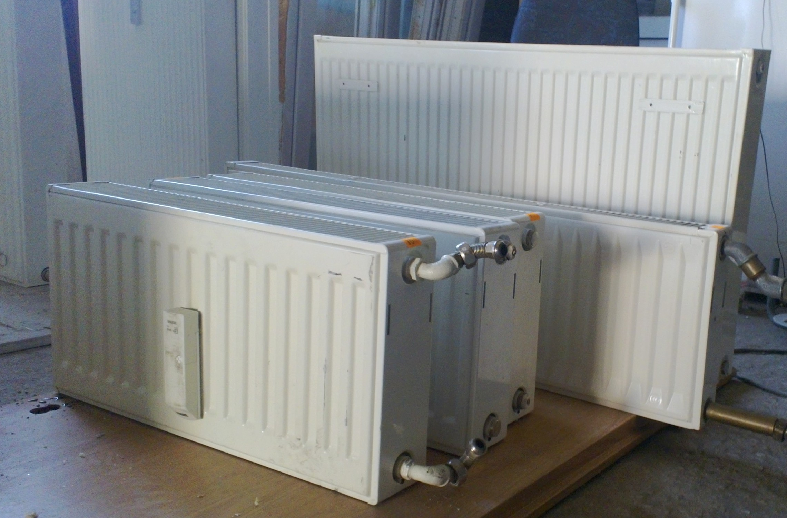
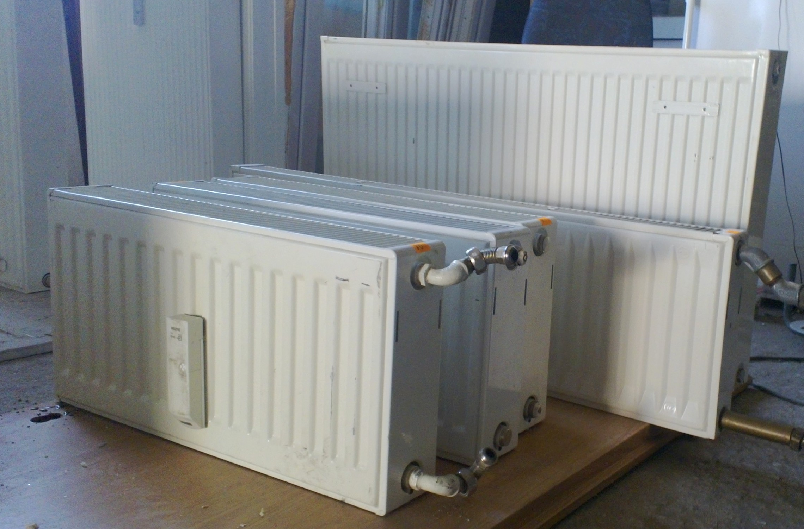

Elektriniai konvektoriai, radiatoriai internetu, gera kaina - van2o.lt
2020.10.29 11:16
Informuojame, kad šioje svetainėje naudojami slapukai (angl. cookies ).
Sutikdami, paspauskite mygtuką „Sutinku“ arba naršykite toliau. Savo duotą sutikimą bet kada galėsite atšaukti pakeisdami savo interneto naršyklės nustatymus ir ištrindami įrašytus slapukus.
Sutinku Uždaryti 0Jūsų krepšelis yra tuščias
Į pradžią Prekių katalogas Gamintojai Apie mus Prekių pristatymas Atsiskaitymo būdai Prekių grąžinimas Kaip užsisakyti Apie van2o.lt Kontaktai Straipsniai Krepšelis tuščias - PAPILDOM? Prisijungti / Užsiregistruoti Pagalba tel. +370 650 96747 , e. paštu: info@van2o.lt
Kategorijos
Vandens šildytuvai (boileriai) Elektriniai vandens šildytuvai (boileriai) 50 L elektriniai boileriai 80 L elektriniai boileriai 100 L elektriniai boileriai 120 L elektriniai boileriai 140-160 L elektriniai boileriai 180-500 L elektriniai boileriai Kombinuoti vandens šildytuvai (boileriai) 80 L kombinuoti boileriai 100 L kombinuoti boileriai 120 L kombinuoti boileriai 140-300 L kombinuoti boileriai Mažos talpos vandens šildytuvai (boileriai) Virš plautuvės Po plautuve Momentiniai vandens šildytuvai (boileriai) Beslėginiai boileriai Slėginiai boileriai Greitaegiai netiesioginio šildymo vandens šildytuvai Pakabinami greitaeigiai boileriai Stacionarūs greitaeigiai boileriai Kieto kuro vandens šildytuvai (boileriai) Vandens šildytuvai (boileriai) su šilumos siurbliu Vandens šildytuvų dalys Vandens siurbliai Giluminiai panardinami vandens siurbliai Vandens siurbliai šuliniams Vandens siurbliai gręžiniams Vandens siurbliai su hidroforu Hidroforai 18-24 L Hidroforai 40-50 L Hidroforai 60 L Hidroforai 80-100 L Fekaliniai siurbliai Drenažiniai siurbliai Vandens siurbliai laistymui Nuotekų siurblinės Cirkuliaciniai siurbliai Cirkuliaciniai siurbliai šildymui Cirkuliaciniai siurbliai karštam vandeniui Vandens siurbliai hidroforui Sausai statomi vandens siurbliai Konsoliniai pramoniniai siurbliai Dažnio keitikliai vandens siurbliui Vandens siurbliai su dažnio keitikliu Siurblių paleidimo ir apsaugos pultai Vandens siurblių dalys, montavimo medžiagos Vandens siurblio slėgio relės Atbuliniai vožtuvai vandentiekiui ir kanalizacijai Elektros varikliai giluminiams siurbliams Pedrollo Pedrollo giluminiai siurbliai Pedrollo siurbliai su hidroforu Pedrollo fekaliniai siurbliai Pedrollo drenažiniai siurbliai Ceva Franklin Electric Ibo Ebara Sistema Armstrong Wilo Wilo cirkuliaciniai siurbliai Wilo nuotekų siurbliai Grundfos Grundfos cirkuliaciniai siurbliai Grundfos giluminiai vandens siurbliai Grundfos nuotekų siurbliai Grundfos siurbliai su hidroforu Hidroforai ir išsiplėtimo indai Hidroforai geriamojo vandens sistemoms Išsiplėtimo indai šildymo sistemoms Krosnelės, Židiniai Granulinės krosnelės Židiniai, Kapsulės Granuliniai židiniai Malkiniai židiniai Židiniai su ortakiais Židiniai su vandens kontūru Dujiniai židiniai Bio židiniai Kieto kuro krosnelės Krosnelės viryklės Šildymo katilai Elektriniai katilai Dujiniai katilai Junkers Bosch Viessmann Protherm Buderus Motan Dujinių katilų kaminai Kieto kuro katilai Lenkiški kieto kuro katilai Ketaus, špižiniai katilai TIS Group Termodinamik Adarad Antara Ferroli Atmos Viadrus Granuliniai katilai Dujų generaciniai katilai Katilai viryklės Degikliai Granuliniai degikliai Granulinių degiklių priedai Akumuliacinės talpos Saulės kolektoriai Kolektoriai Sistemos Saulės kolektorių priedai Santechnikos dalys Slėgio reduktoriai Katilinių įranga Fitingai ir movos PE vamzdžiai ir jungtys Apsauginiai vožtuvai Automatiniai nuorintojai Klimato kontrolės technika Elektriniai radiatoriai, konvektoriai Tepaliniai radiatoriai Termoventiliatoriai Ventiliatoriai Šviestuvai ventiliatoriai Pastatomi ventiliatoriai Ventiliatoriai su stovu Staliniai ventiliatoriai Bokštiniai ventiliatoriai Pakabinami ventiliatoriai Ventiliatoriai voniai Oro vėsintuvai Oro drėkintuvai Buitiniai Ultragarsiniai Karštų garų drėkintuvai Šaltų garų Oro drėkintuvai-valytuvai Priedai Komerciniai Oro sausintuvai Buitiniai Pramoniniai Oro valytuvai ir jonizatoriai Oro aromatizatoriai Infraraudonųjų spindulių šildytuvai Kambario termostatai Ozono generatoriai Vonios, dušo ir virtuvės įranga Dušo įranga Dušo kabinos Stačiakampės dušo kabinos Kvadratinės dušo kabinos Penkiakampės dušo kabinos Pusapvalės dušo kabinos Dušo kabinos be padėklo Masažinės dušo kabinos Dušo padėklai Dušai Dušo komplektai Dušo galvutės Dušo alkūnės Dušo maišytuvai Dušo stovai Dušo lentynos Dušo laikikliai Potinkinės dušo sistemos Dušo durys ir sienelės Vonios Vonios sienelės Vonios baldai Praustuvai Plautuvės Nerūdijančio plieno plautuvės Granitinės plautuvės Keramikinės plautuvės Tectonite plautuvės Plautuvių priedai Plautuvių maišytuvai Maišytuvai Bidė Klozetai, pisuarai Potinkinės sistemos Latakai, trapai ir sifonai Sifonai Latakai Trapai Kitos dalys Rankšluosčių džiovintuvai, gyvatukai, kopėtėlės Kopėtėlės Rankšluosčių džiovintuvai elektriniai Rankšluosčių džiovintuvai su ventiliatoriumi Rankšluosčių džiovintuvai kombinuoti Rankšluosčių džiovintuvai vandeniniai Gyvatukai Elektriniai gyvatukai Vandens gyvatukai Vonios kambario aksesuarai, priedai Šilumos siurbliai Šilumos siurbliai Oras-Vanduo Geoterminiai šilumos siurbliai Vanduo-Vanduo Uodų, musių gaudyklės www.van2o.lt Prekių katalogas Klimato kontrolės technika
Susisiekite su mumis: +370 650 96747
Prekių katalogas
Prekių katalogas
Vandens šildytuvai (boileriai) Vandens siurbliai Hidroforai ir išsiplėtimo indai Krosnelės, Židiniai Šildymo katilai Akumuliacinės talpos Saulės kolektoriai Santechnikos dalys Klimato kontrolės technika Elektriniai radiatoriai, konvektoriai Tepaliniai radiatoriai Termoventiliatoriai Ventiliatoriai Oro vėsintuvai Oro drėkintuvai Oro sausintuvai Oro valytuvai ir jonizatoriai Oro aromatizatoriai Infraraudonųjų spindulių šildytuvai Kambario termostatai Ozono generatoriai Vonios, dušo ir virtuvės įranga Šilumos siurbliai Uodų, musių gaudyklėsFiltras
Gamintojai
Gamintojai
Prekių palyginimas
Prekių palyginimas
Nėra prekių palyginimui
Top10
Top10
1. Konvektorius Atlantic F125 DESIGN Plug 1000W 2. Kombinuotas vandens šildytuvas Ariston PRO1 R 80 VTS 3. Konvektorius Atlantic F125 DESIGN Plug 1500W 4. Konvektorius Atlantic ALTIS ECOBOOST 3 1500W, Wi-Fi 5. Kombinuotas vandens šildytuvas Ariston PRO1 R 80 VTD 6. Kombinuotas vandens šildytuvas Atlantic COMBI O'Pro 100 7. Konvektorius Atlantic ALTIS ECOBOOST 2 1000W 8. Konvektorius Atlantic F119 DESIGN 2000W 9. Tepalinis šildytuvas Ardes OILO MINI 600W 10. Tepalinis šildytuvas Ardes OILO TURBO TIMER 9 sekcijų 2400WDabar lankosi
Dabar lankosi
Šiuo metu lankosi 392 svečiai(-ių) ir 1 narys
Draugai
Draugai
Centrifugos – MORIS Technology
Arsan.lt - dušo įranga
www.agmeka.lt
Pastolių nuoma
Profesionalus svetainės optimizavimas
Vaikų kambario baldai
Elektriniai radiatoriai, konvektoriai
Elektriniai radiatoriai, dar kitaip vadinami konvektoriniais radiatoriais – tai vieni geriausių nedidelių patalpų šildymo įrenginių, galinčių užtikrinti tylų, tolygų bei greitą patalpos šildymą. Jų veikimo principas itin patogus, pigus bei ergonomiškas – konvektorių šildymo elementas šilumą į patalpą spinduliuoja per natūralią oro cirkuliaciją (konvekciją). Dėl šios priežasties konvektoriniai radiatoriai nesausina oro ir jį išlaiko gaivų, o dėl neįkaistančio paviršiaus jie saugūs naudoti patalpose, kuriose yra vaikų.
Elektriniai konvektoriai yra pakankamai veiksmingas būdas apšildyti patalpas, jeigu jos buvo padidintos ir jų šilumos palaikymui tiesiog nebeužtenka centrinio šildymo. Atsidūrus tokioje situacijoje, jie yra kur kas geresnis pasirinkimas už ventiliatorinį šildytuvą, nes yra mobilesni – tarp galimų variantų ir pastatomi konvektoriai, ir pakabinami konvektoriniai radiatoriai. O jei jums norisi ir ventiliatoriaus funkcijos, galite rinktis prietaisus su integruotu ventiliatoriumi, kuris padės šilumą paskirstyti greičiau.
Elektriniai radiatoriai puikiai tinka įvairių tipų patalpoms. Juos galima statyti ir nuosavame name, ir bute, ir pramoniniuose pastatuose ar kitose viešose erdvėse – parduotuvėse, kavinėse ir pan. Nors šiuolaikiniai konvektoriai pasižymi įvairiomis rūšimis ir nesudėtingu montavimu (jie gali būti pakabinami ant sienos arba pastatomi), populiariausi – pastatomi konvektoriai, kuriuos nesunkiai perkelsite į kitą patalpą bei panaudosite universaliai.
Rodoma 1 - 20 iš 109
-14 €Konvektorius Atlantic F119 DESIGN 500W
Elektrinis konvektorius, Galia 0.5kW, 230V, Matmenys (PxAxG) 391x461x114mm, HD kaitinimo elementas, Veikimo indikatorius, Elektroninis termostatas, Kritimo daviklis, Eco/Comfort/Antifrost funkcijos
Kategorija: Elektriniai radiatoriai, konvektoriai
Kaina: 54,00 € 68,00 € Palyginti -16 €Konvektorius Atlantic F125 DESIGN Plug 500W
Elektrinis konvektorius, Galia 500W, Integruotas programavimas, Laikmatis iki 8h, Skaitmeninis valdymas, Greita ir tolygi šilumos sklaida, Didelio tikslumo elektroninis termostatas, IP24 apsaugos klasė, Apsauga nuo perkaitinimo, Skaitmeninis ekranas
Kategorija: Elektriniai radiatoriai, konvektoriai
Kaina: 70,00 € 86,00 € Palyginti -15 €Konvektorius Atlantic F119 DESIGN 1000W
Elektrinis konvektorius, Galia 1.0kW, 230V, Matmenys (PxAxG) 465x461x114mm, HD kaitinimo elementas, Veikimo indikatorius, Elektroninis termostatas, Kritimo daviklis, Eco/Comfort/Antifrost funkcijos
Kategorija: Elektriniai radiatoriai, konvektoriai
Kaina: 59,00 € 74,00 € Palyginti -17 €Konvektorius Atlantic F125 DESIGN Plug 1000W
Elektrinis konvektorius, Galia 1000W, Integruotas programavimas, Laikmatis iki 8h, Skaitmeninis valdymas, Greita ir tolygi šilumos sklaida, Didelio tikslumo elektroninis termostatas, IP24 apsaugos klasė, Apsauga nuo perkaitinimo, Skaitmeninis ekranas
Kategorija: Elektriniai radiatoriai, konvektoriai
Kaina: 74,00 € 91,00 € Palyginti TOP -33 €Konvektorius Atlantic ALTIS ECOBOOST 2 1000W
Elektrinis konvektorius, Galia 1.0kW, 230V, Matmenys 539x461x114mm, HD kaitinimo elementas, LED ekranas, Elektroninis termostatas, Ecoboost funkcija, Judesio daviklis, Programavimas
Kategorija: Elektriniai radiatoriai, konvektoriai
Kaina: 112,00 € 145,00 € Palyginti -15%Infraraudonųjų spindulių konvektorius Atlantic SOLIUS WiFi 1000W
Infraraudonųjų spindulių elektrinis konvektorius, Galia 1.0kW, 230V, Matmenys 601x477x129mm, ekstruzinio aliuminio kaitinimo elementas, LED ekranas, Elektroninis termostatas, Judesio daviklis, Programavimas, Wi-Fi, Tinkamas patalpoms su aukštomis lubomis
Kategorija: Elektriniai radiatoriai, konvektoriai
Kaina: 212,50 € 250,00 € Palyginti -16 €Konvektorius Atlantic ALTIS ECOBOOST 3 1000W, Wi-Fi
Elektrinis konvektorius, Galia 1.0kW, 230V, Matmenys 539x461x114mm, HD kaitinimo elementas, LED ekranas, Elektroninis termostatas, Ecoboost funkcija, Judesio daviklis, Programavimas
Kategorija: Elektriniai radiatoriai, konvektoriai
Kaina: 139,00 € 155,00 € Palyginti -15 €Konvektorius Atlantic F119 DESIGN 1500W
Elektrinis konvektorius, Galia 1.5kW, 230V, Matmenys (PxAxG) 613x461x114mm, HD kaitinimo elementas, Veikimo indikatorius, Elektroninis termostatas, Kritimo daviklis, Eco/Comfort/Antifrost funkcijos
Kategorija: Elektriniai radiatoriai, konvektoriai
Kaina: 63,00 € 78,00 € Palyginti -17 €Konvektorius Atlantic F125 DESIGN Plug 1500W
Elektrinis konvektorius, Galia 1500W, Integruotas programavimas, Laikmatis iki 8h, Skaitmeninis valdymas, Greita ir tolygi šilumos sklaida, Didelio tikslumo elektroninis termostatas, IP24 apsaugos klasė, Apsauga nuo perkaitinimo, Skaitmeninis ekranas
Kategorija: Elektriniai radiatoriai, konvektoriai
Kaina: 79,00 € 96,00 € Palyginti -35 €Konvektorius Atlantic ALTIS ECOBOOST 1500W
Elektrinis konvektorius, Galia 1.5kW, 230V, Matmenys 689x461x114mm, HD kaitinimo elementas, LED ekranas, Elektroninis termostatas, Ecoboost funkcija, Judesio daviklis, Programavimas
Kategorija: Elektriniai radiatoriai, konvektoriai
Kaina: 120,00 € 155,00 € Palyginti -17 €Konvektorius Atlantic ALTIS ECOBOOST 3 1500W, Wi-Fi
Elektrinis konvektorius, Galia 1.5kW, 230V, Matmenys 687x461x114mm, HD kaitinimo elementas, LED ekranas, Elektroninis termostatas, Ecoboost funkcija, Judesio daviklis, Programavimas
Kategorija: Elektriniai radiatoriai, konvektoriai
Kaina: 154,00 € 171,00 € Palyginti TOPKonvektorius su inverteriu Electrolux Air Gate Digital, 1500W
Elektrinis konvektorius su inverteriu, Galia 1500W, Greita ir tolygi šilumos sklaida, IP24 apsaugos klasė, Ekonomiškas, Temperatūros palaikymas veikiant ne visu galingumu, LCD ekranas, Funkcija "Autorestart", Laikmatis, Filtras nuo dulkių
Kategorija: Elektriniai radiatoriai, konvektoriai
Kaina: 105,00 € Palyginti -17 €Konvektorius Atlantic F119 DESIGN 2000W
Elektrinis konvektorius, Galia 2.0kW, 230V, Matmenys (PxAxG) 761x461x114mm, HD kaitinimo elementas, Veikimo indikatorius, Elektroninis termostatas, Kritimo daviklis, Eco/Comfort/Antifrost funkcijos
Kategorija: Elektriniai radiatoriai, konvektoriai
Kaina: 70,00 € 87,00 € Palyginti -19 €Konvektorius Atlantic F125 DESIGN Plug 2000W
Elektrinis konvektorius, Galia 2000W, Integruotas programavimas, Laikmatis iki 8h, Skaitmeninis valdymas, Greita ir tolygi šilumos sklaida, Didelio tikslumo elektroninis termostatas, IP24 apsaugos klasė, Apsauga nuo perkaitinimo, Skaitmeninis ekranas
Kategorija: Elektriniai radiatoriai, konvektoriai
Kaina: 89,00 € 108,00 € Palyginti TOP -46 €Konvektorius Atlantic ALTIS ECOBOOST 2 2000W
Elektrinis konvektorius, Galia 2.0kW, 230V, Matmenys 835x461x114mm, HD kaitinimo elementas, LED ekranas, Elektroninis termostatas, Ecoboost funkcija, Judesio daviklis, Programavimas
Kategorija: Elektriniai radiatoriai, konvektoriai
Kaina: 128,00 € 174,00 € Palyginti -19 €Konvektorius Atlantic ALTIS ECOBOOST 3 2000W, Wi-Fi
Elektrinis konvektorius, Galia 2.0kW, 230V, Matmenys 835x461x114mm, HD kaitinimo elementas, LED ekranas, Elektroninis termostatas, Ecoboost funkcija, Judesio daviklis, Programavimas
Kategorija: Elektriniai radiatoriai, konvektoriai
Kaina: 165,00 € 184,00 € Palyginti -20 €Konvektorius Atlantic F119 DESIGN 2500W
Elektrinis konvektorius, Galia 2.5kW, 230V, Matmenys (PxAxG) 909x461x114mm, HD kaitinimo elementas, Veikimo indikatorius, Elektroninis termostatas, Kritimo daviklis, Eco/Comfort/Antifrost funkcijos
Kategorija: Elektriniai radiatoriai, konvektoriai
Kaina: 73,00 € 93,00 € Palyginti TOPKonvektorius su inverteriu Electrolux Air Gate Digital, 1800W
Elektrinis konvektorius su inverteriu, Galia 1800W, Greita ir tolygi šilumos sklaida, IP24 apsaugos klasė, Ekonomiškas, Temperatūros palaikymas veikiant ne visu galingumu, LCD ekranas, Funkcija "Autorestart", Laikmatis, Filtras nuo dulkių
Kategorija: Elektriniai radiatoriai, konvektoriai
Kaina: 114,00 € Palyginti TOPKonvektorius su inverteriu Electrolux Air Gate Digital, 2200W
Elektrinis konvektorius su inverteriu, Galia 2200W, Greita ir tolygi šilumos sklaida, IP24 apsaugos klasė, Ekonomiškas, Temperatūros palaikymas veikiant ne visu galingumu, LCD ekranas, Funkcija "Autorestart", Laikmatis, Filtras nuo dulkių
Kategorija: Elektriniai radiatoriai, konvektoriai
Kaina: 124,00 € PalygintiLaikiklių komplektas Atlantic konvektoriams 517000
Kojų komplektas tinkamas Atlantic ALTIS ECOBOOST, F125 ir F117 DESIGN PLUG konvektoriams
Kategorija: Elektriniai radiatoriai, konvektoriai
Kaina: 7,00 € PalygintiRodoma 1 - 20 iš 109
‹ 1 2 3 4 5 6 ›Ypatingos prekės
Konvektorius Atlantic ALTIS ECOBOOST 2 1000W
Top -33 €Elektrinis konvektorius, Galia 1.0kW, 230V, Matmenys 539x461x114mm, HD kaitinimo elementas, LED ekranas, Elektroninis termostatas, Ecoboost funkcija, Judesio daviklis, Programavimas
Kaina: 112,00 € 145,00 € PalygintiKonvektorius Atlantic ALTIS ECOBOOST 2 1500W
Top -23 €Elektrinis konvektorius, Galia 1.5kW, 230V, Matmenys 687x461x114mm, HD kaitinimo elementas, LED ekranas, Elektroninis termostatas, Ecoboost funkcija, Judesio daviklis, Programavimas
Kaina: 138,00 € 161,00 € PalygintiKonvektorius Atlantic ALTIS ECOBOOST 2 2000W
Top -46 €Elektrinis konvektorius, Galia 2.0kW, 230V, Matmenys 835x461x114mm, HD kaitinimo elementas, LED ekranas, Elektroninis termostatas, Ecoboost funkcija, Judesio daviklis, Programavimas
Kaina: 128,00 € 174,00 € PalygintiKonvektorius su inverteriu Electrolux Air Gate Digital, 1500W
TopElektrinis konvektorius su inverteriu, Galia 1500W, Greita ir tolygi šilumos sklaida, IP24 apsaugos klasė, Ekonomiškas, Temperatūros palaikymas veikiant ne visu galingumu, LCD ekranas, Funkcija "Autorestart", Laikmatis, Filtras nuo dulkių
Kaina: 105,00 € Palyginti Rezultatai 4 iš 6 Rodyti daugiauBene didžiausias pastatomų ir kabinamų konvektorių privalumas – maži instaliavimo kaštai, kurie padeda sutaupyti ir pigiai apšildyti patalpas. Patogu ir tai, jog jie neturi tarpinio šilumos nešėjo ar triukšmingų, greitai gendančių ventiliatorių. Be to, elektrinių konvektorių eksploatacija labai paprasta. Jiems pakanka minimalių energijos sąnaudų, o patalpą įrenginiai sušildo taip pat greitai kaip kiti šilumos prietaisai. Na, o bene šauniausia tai, kad tokie konvektoriai veikia net iki 20 metų, todėl galite būti tikri, kad už itin optimalią kainą įsigysite prietaisą, kuris jums tarnaus ilgai.
Kaip pasirinkti elektrinį radiatorių?
Radiatorių galingumas turėtų atitikti apšildomų patalpų dydį. Internete galite rasti ne vieną patikimą vadovą ar lentelę, kuriuose nurodyta, kiek galios reikia skirtingo dydžio patalpoms. Tik turėkite omenyje, kad jei lubos aukštesnės ar šiluminė izoliacija ganėtinai prasta, reikėtų įsigyti dar didesnio galingumo elektrinį radiatorių. Svarbios savybės, į kurias reikia atsižvelgti, jei renkatės konvektorinį radiatorių – šilumos nustatymai ir jų patogumas, elektroninė klimato kontrolė, kuri padeda išlaikyti pasirinktą temperatūrą ir užtikrina ekonomiškumą. Taip pat svarbu atkreipti dėmesį, kad įrenginyje būtų apsauga nuo užšalimo, apsauginis atjungimo mechanizmas ir garsinis aliarmo signalas, kuris siųs pranešimą, jei radiatorius netyčia apsiverstų. Jei jus domina nauji, pažangūs, stilingo dizaino, kompaktiški ir lengvai įrengiami konvektoriniai radiatoriai, jų ieškokite mūsų internetinėje parduotuvėje. Čia rasite platų konvektorių pasirinkimą: siūlome tiek pakabinamus, tiek pastatomus, skirtingo dizaino bei funkcionalumo konvektorius nuo standartinių modelių su mechaniniais termostatais iki novatoriškų šildytuvų su LED ekranais, judesio davikliais ir įvairiomis programavimo opcijomis. Jei jums sunku pasirinkti tinkamiausią variantą, visuomet galite rašyti mums ir profesionalūs darbuotojai patars, koks įrenginys atitiks jūsų poreikius.
Gyvename šalyje, kurioje net ir vasarą tenka iš spintos traukti storus megztinius, tad jei ieškote būdų, kaip patalpas įšildyti pigiau nei įprastais, triukšmingais bei nepatogiais šildytuvais, modernų elektroninį konvektorių įsigykite jau dabar!Gyvename šalyje, kurioje net ir vasarą tenka iš spintos traukti storus megztinius, tad jei ieškote būdų, kaip patalpas įšildyti pigiau nei įprastais, triukšmingais bei nepatogiais šildytuvais, modernų elektroninį konvektorių įsigykite jau dabar!
Platus pasirinkimas, aukšta kokybė, gerai kaina nuolat taikomos akcijos bei galimybė prekes siųsti ne tik į didžiuosius Lietuvos miestus (Vilnių, Kauną, Klaipėdą, Šiaulius ir Panevėžį), bet ir visoje šalyje – tai priežastys, dėl kurių verta namų jaukumą ir šilumą patikėti van2o.lt
Į pradžią | Kontaktai © UAB „Prolita“. Visos teisės saugomos
L. Asanavičiūtės g. 38-62, LT-04313 Vilnius, Lietuva
Telefonas +370 650 96747 El.paštas info@van2o.lt www.prolita.lt
Įmonės kodas 302555306 PVM mokėtojo kodas LT100005695015
Duomenis tvarko Valstybės įmonės Registrų centro Vilniaus filialas
vandens šildytuvai | boileriai | vandens siurbliai | granulinės krosnelės | kieto kuro katilai | elektriniai konvektoriai
- Radiatoriai gera kaina internetu | pigu.lt
- Radiatoriai ir jų dalys | Šildymo prietaisai | Senukai.lt
- Kermi radiatoriai. Akcija!
- Radiatoriai
- Galingumų lentelė | Radiatoriai
- Radiatoriai Internetu pigiau Žema kaina | b-a.eu
- Aliumininiai radiatoriai | Vilpra.lt: Šiluma Jūsų namams
- Radiatoriai - Jaukurai
- Radiatoriai - Radiatoriai | SILTAS.LT
- Radiatoriai internetu | namams24.lt
- Radiatoriai gera kaina internetu | pigu.lt
Radiatoriai yra gaminami keletos rūšių ir galingumų Daugiau Kodėl mes? Mūsų gamybos linija suvartoja daug mažiau elektros energijos, o dažymo ir lakavimo linijoje “Eco Line” nenaudojami tokie organiniai junginiai kaip fosfatai, toksiški sunkieji metalai.
- Radiatoriai ir jų dalys | Šildymo prietaisai | Senukai.lt
Adresas: Savanorių pr. 191 a, LT-02300, Vilnius Telefono nr.: +370 5 232 2498 Darbo laikas: (I - V) 7.30 - 16.30 val.
- Kermi radiatoriai. Akcija!
Radiatoriai yra itin svarbus prietaisas namuose, užtikrinantis šiltą patalpos temperatūrą net ir šalčiausiu metu laiku. Būtent todėl radiatoriai, kuriuos parduodame, pasižymi plačia įvairove – elektriniai, aliuminiai, plieniniai radiatoriai, įvairūs stiliai, spalvos, dydžiai.Nors į gerus radiatorius verta investuoti, mes vis tiek siūlome puikų kainos ir kokybės santykį.
- Radiatoriai
Kermi radiatoriai tai populiariausia šildymo įranga, tiek naujose statybose, tiek renovuojamuose objektuose. Moderni radiatorių gamybos technologija, nedidelė vandens talpa, harmoningas konvekcijos ir spinduliavimo būdu atiduodamas šilumos srautas užtikrina didelę radiatoriaus šilumos galią.
- Galingumų lentelė | Radiatoriai
Radiatoriai skirstomi į du pagrindinius tipus: plokštinius radiatorius (plienininiai) ir sekcijinius (iš ketaus ar aliuminio, arba kombinuoti). Lyginant skirtingų radiatorių savybes, išsiskiria ketiniai – juose yra didesnis vandens tūris, todėl jie yra labai inertiški, tačiau labai patvarūs ir ilgaamžiai.
- Radiatoriai Internetu pigiau Žema kaina | b-a.eu
Plieniniai radiatoriai internetu gera kaina.Internetinėje parduotuvėje b-a.eu rasite virš 700 įvairaus modelio plieninių radiatorių. Naujausi pasiūlymai geriausiomis kainomis. Vyksta dažnos akcijos., kaina internetu pigiau.
- Aliumininiai radiatoriai | Vilpra.lt: Šiluma Jūsų namams
Praktiški aliumininiai radiatoriai namams ir kitoms patalpoms šildyti. Skirtingo pločio ir matmenų plieniniai radiatoriai. Žinomi gamintojai, plati pasiūla, geros kainos, taikomos nuolaidos ir akcijos.
- Radiatoriai - Jaukurai
Plieniniai radiatoriai pasižymi greitu ir patogiu montavimu – radiatoriai tvirtinami universaliais laikikliais ir gali būti apsukami, todėl paprasta montuoti toje pusėje, kurioje yra vandens įvadas. Gamintojai HM Heizkorper ir Borpan užtikrinina aukštą plieninių radiatorių kokybę.
- Radiatoriai - Radiatoriai | SILTAS.LT
Centrinio šildymo radiatoriai gera kaina pigu.lt! Apačioje pajungiami, šone pajungiami radiatoriai internetu pigiau. Kermi, Purmo ir kiti prekiniai ženklai.
- Radiatoriai internetu | namams24.lt
Radiatoriai namuose daugiausia dėmesio sulaukia prasidėjus šildymo sezonui, kai nuo jų sklinda maloni šiluma, suteikdama ne tik šilumos, bet ir jaukimo namams. Šiuolaikiniai radiatoriai net tampa tam tikru interjero akcentu. Radiatoriaus pasirinkimas - nelengvas procesas, nes lemia ne tik šildymo efektyvumą, bet ir vizualinį patalpos vaizdą.
Radiatoriai yra gaminami keletos rūšių ir galingumų Daugiau Kodėl mes? Mūsų gamybos linija suvartoja daug mažiau elektros energijos, o dažymo ir lakavimo linijoje “Eco Line” nenaudojami tokie organiniai junginiai kaip fosfatai, toksiški sunkieji metalai.
Adresas: Savanorių pr. 191 a, LT-02300, Vilnius Telefono nr.: +370 5 232 2498 Darbo laikas: (I - V) 7.30 - 16.30 val.
Radiatoriai yra itin svarbus prietaisas namuose, užtikrinantis šiltą patalpos temperatūrą net ir šalčiausiu metu laiku. Būtent todėl radiatoriai, kuriuos parduodame, pasižymi plačia įvairove – elektriniai, aliuminiai, plieniniai radiatoriai, įvairūs stiliai, spalvos, dydžiai.Nors į gerus radiatorius verta investuoti, mes vis tiek siūlome puikų kainos ir kokybės santykį.
Kermi radiatoriai tai populiariausia šildymo įranga, tiek naujose statybose, tiek renovuojamuose objektuose. Moderni radiatorių gamybos technologija, nedidelė vandens talpa, harmoningas konvekcijos ir spinduliavimo būdu atiduodamas šilumos srautas užtikrina didelę radiatoriaus šilumos galią.
Radiatoriai skirstomi į du pagrindinius tipus: plokštinius radiatorius (plienininiai) ir sekcijinius (iš ketaus ar aliuminio, arba kombinuoti). Lyginant skirtingų radiatorių savybes, išsiskiria ketiniai – juose yra didesnis vandens tūris, todėl jie yra labai inertiški, tačiau labai patvarūs ir ilgaamžiai.
Plieniniai radiatoriai internetu gera kaina.Internetinėje parduotuvėje b-a.eu rasite virš 700 įvairaus modelio plieninių radiatorių. Naujausi pasiūlymai geriausiomis kainomis. Vyksta dažnos akcijos., kaina internetu pigiau.
Praktiški aliumininiai radiatoriai namams ir kitoms patalpoms šildyti. Skirtingo pločio ir matmenų plieniniai radiatoriai. Žinomi gamintojai, plati pasiūla, geros kainos, taikomos nuolaidos ir akcijos.
Plieniniai radiatoriai pasižymi greitu ir patogiu montavimu – radiatoriai tvirtinami universaliais laikikliais ir gali būti apsukami, todėl paprasta montuoti toje pusėje, kurioje yra vandens įvadas. Gamintojai HM Heizkorper ir Borpan užtikrinina aukštą plieninių radiatorių kokybę.
Centrinio šildymo radiatoriai gera kaina pigu.lt! Apačioje pajungiami, šone pajungiami radiatoriai internetu pigiau. Kermi, Purmo ir kiti prekiniai ženklai.
Radiatoriai namuose daugiausia dėmesio sulaukia prasidėjus šildymo sezonui, kai nuo jų sklinda maloni šiluma, suteikdama ne tik šilumos, bet ir jaukimo namams. Šiuolaikiniai radiatoriai net tampa tam tikru interjero akcentu. Radiatoriaus pasirinkimas - nelengvas procesas, nes lemia ne tik šildymo efektyvumą, bet ir vizualinį patalpos vaizdą.
 
